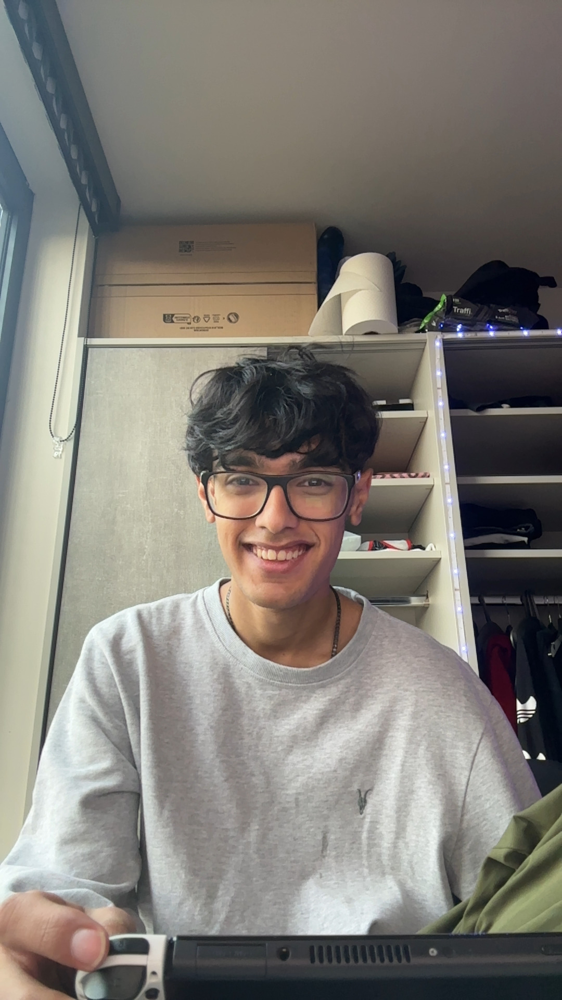
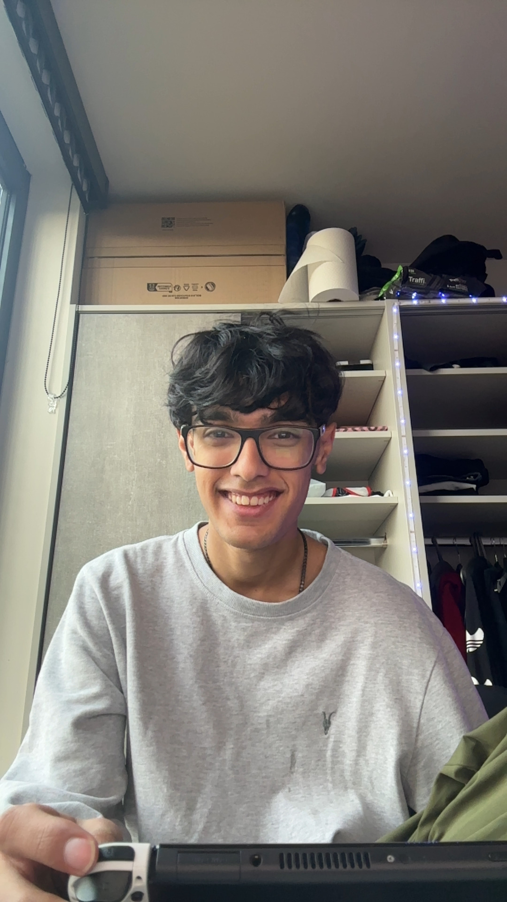

Hi, this is the most recent stretch. I was going to say final, but we’ve got lots to go, in life, not the website. Ahhh I landed in the UK and my mumma did the same day. Of course I wanted to do right by everyone in my life close to me, so long story short I missed my bus, I threw a tantrum, cried a bit, had a subway cookie and long story short, lots and lots of hours of travel later, I was next to you. I came out of the toilet and you were there holding out a box of Drake AF1s. I just wanted to mention that you make me sooo happy bubu. Anywho, no talking about events in particular. I spent 5 days with you!! I’d wake up to your silly little face again and again and it was my favourite thing. I woke up at 12, which was after you, I felt so embarrassed and you made me feel completely normal for it. You’d carefully wriggle around in bed, sure not to make a sound so that I didn’t wake up, turning the heating up for my little cold self. We went out with your friends everyday, you let me, as always, intrude on your life, meet your friends, play really intense games of spoons and pool with them. Thank you bubu, genuinely. You truly are the best decision I've ever made. I love you so much for that. Anyways, yeah we had the most amazing 5 days, you’d try getting me to do work and shower, and we’d cuddle and watch anime together and also omg I loved the spiderman game. We had lots of saucy time, but no sex, which is wild but I'm glad. Overall it was the most wholesome five days. I felt so loved and cared for, I’m sorry that this is revolving around me and I’m just now realising I probably didn’t make you feel as good as you made me feel. Hey I made you lots of pasta, that counts. I went back to London for Anishas birthday and we had a really hard 4 days apart (the sarcasm didn’t come through here). Ugh i keep forgetting I’m not allowed to talk about each event, it needs to be in general, because we need to update your scrapbook with each event. Ok so, we met each other pretty much everyday. It was amazing. I met with (now) my friends, but your friends (also make sense why Leilani was never there now oops). I had so much fun with them bubu. Thank you, so much, for giving me this life. I cried to you all the time and you took care of me. We pretty much entirely completed our winter bucket list, which is very impressive. We created so many amazing memories, I think we had the perfect balance of going out dates, home dates, social days, family days, and sexy time. I was VERY satisfied. Also, because I don’t think we can put this in the scrapbook, or even if we can I just really wanted to see if I’d be able to do this so Enter Password Hehe ok(I have no idea how I plan on making that work). We had the best time together in the UK, I think I got a little lost and I chose to stop thinking about the future so much, I just wanted to enjoy it, and I did, we did. I stopped trying to be a big girl and make the ‘correct’ decision, and I just shamelessly say things like ''you're the love of my life” or “I can’t wait to marry you”, look, it's our 2 year anniversary. I’m allowed now. Anyways, of course I came back to India and I didn’t cry when leaving, but when I came here, I tried, I tried staying happy. It was so scary though, I had done so horribly last semester, I went pretty bad, you had to stay with me most times, you had to deal with my mental instability the most. Thank you for doing it all bubu. Thank you for watching me bawl my eyes out not knowing what was going on with me. I got better and I felt much better, but of course it does hit me every now and then, and like we agreed it's around 3 days a month. Which we can definitely handle. I promise I’m trying. I’m writing this on valentine’s day by the way. So at this point I’ve had my second big mental health oopsie this semester. We’re not perfect bubu, but we’re Manasi and Nimai. We’re both still learning and growing within this relationship. We both get scared of hurting each other, losing each other, messing things up. But bubu, we’re figuring it out, one step, one day, one semester at a time, we’re figuring it out. I know we’re not perfect, but I also know we bring each other the most joy and peace we can even imagine. Thank you for being the best boyfriend I could’ve ever asked for, I know I always say this, but you genuinely are everything I had ever prayed for and more. You are the most loving, caring, thoughtful, gentle, sweet, monkey stupedo lover boy I could’ve ever dreamt of. I'm going to be gross and say it. I love you bubu, you’re the love of my life, I can’t wait to maybe, hopefully, possibly marry you one day. Building a family with you, just like we had talked about when we were 14, would be the absolute dream, raising two little babies with you. Dressing them up all dripped out, god I’m going off track. Bubu the point is, thank you. Thank you for the most amazing relationship over the past 2 years. Thank you for always pushing me to do my best and making me feel like the coolest, smartest girl in the world. Thank you for being it all bubu. I don’t want to keep rambling, so that's all for now. I love you. Happy 2 year anniversary my love.